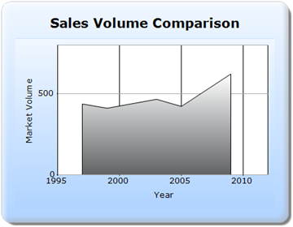
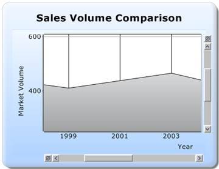

The steps to create a chart with the zooming feature through Builder are as follows:
Step 1:
Controller:
Add the code displayed below in the HomeController.cs file. ChartParams class is used to get the post parameter values for the chart. Hence, it is used as a parameter in the post action. Then, it is passed to the view through the ViewData.
using System;
using System.Collections.Generic;
using System.Linq;
using System.Web;
using System.Web.Mvc;
using Syncfusion.Mvc.Shared;
using Syncfusion.Mvc.Chart;
using Syncfusion.Windows.Forms.Chart;
using Syncfusion.Drawing;
using System.Drawing;
namespace Sample.Controllers
{
[HandleError]
public class HomeController : Controller
{
public ActionResult Index()
{
return View();
}
[AcceptVerbs(HttpVerbs.Post)]
public ActionResult Index(MVCChartModel chartModel, ChartParams param)
{
//Passing the chart post parameter values to the view
ViewData["ChartParamsData"] = param;
return PartialView("PartialView", this.ViewData);
}
}
}
Step 2:
View:
Add the code displayed below in the Index file.
View[ASPX]
<%@ Page Language="C#" MasterPageFile="~/Views/Shared/Site.Master" Inherits="System.Web.Mvc.ViewPage" %>
<asp:Content ID="Content1" ContentPlaceHolderID="TitleContent" runat="server">
Chart Zooming
</asp:Content>
<asp:Content ID="Content2" ContentPlaceHolderID="MainContent" runat="server">
<%--Rendering the Chart Control through partial view--%>
<%Html.RenderPartial("PartialView", this.ViewData); %>
</asp:Content>
View[cshtml]
@{
Layout="~/Views/Shared/_Layout.cshtml";
ViewBag.Title= = “Chart Zooming”;
}
<div>
@*--Rendering the Chart Control through partial view--*@
@Html.RenderPartial("PartialView", this.ViewData)
</div>
Step 3:
PartialView:
Create a Partial View named “PartialView.ascx”, and add the code displayed below in it.
View[ASPX]
<%@ Control Language="C#" Inherits="System.Web.Mvc.ViewUserControl" %>
<%--Rendering the Chart COntrol--%>
<%=Html.Chart("chart_Model")
//Enabling x-axis and y-axis zooming
.EnableXZooming(true)
.EnableYZooming(true)
.ChartSeriesSkins(ChartSeriesSkins.Pastel)
.Series(series=>{
//Adding the chart series points
series.Add().Points(points =>
{
points.Add().X(1997).YValues(new double[] { 437 });
points.Add().X(1999).YValues(new double[] { 411 });
points.Add().X(2003).YValues(new double[] { 466 });
points.Add().X(2005).YValues(new double[] { 422 });
points.Add().X(2009).YValues(new double[] { 622 });
}).Name("Saab").Type(Syncfusion.Windows.Forms.Chart.ChartSeriesType.Area);
}).PrimaryXAxis(xaxis=>{
ChartParams ChartParams = new ChartParams();
ChartParams = (ChartParams)ViewData["ChartParamsData"];
xaxis
.Range(range =>
{
range.Max(2012).Min(1995).Interval(5);
})
.Title(" Year ");
xaxis.LineType(line => line.ForeColor(System.Drawing.Color.DarkGray)).GridLineType(gridline => gridline.ForeColor(System.Drawing.Color.DarkGray)).Title("Year");
})
.PrimaryYAxis(yaxis =>
{
ChartParams ChartParams = new ChartParams();
ChartParams = (ChartParams)ViewData["ChartParamsData"];
yaxis.Title("Market Volume ")
.Range(range =>
{
range.Max(800).Min(0).Interval(500);
});
yaxis.LineType(line => line.ForeColor(System.Drawing.Color.DarkGray)).GridLineType(gridline => gridline.ForeColor(System.Drawing.Color.DarkGray)).Title("Market Volume");
})
.ChartParamsArgs((ChartParams)ViewData["ChartParamsData"])
.Text("Sales Volume Comparison")
.Font(new System.Drawing.Font("Verdana", 12, System.Drawing.FontStyle.Bold))
.BorderAppearance(ba => ba.SkinStyle(Syncfusion.Windows.Forms.Chart.ChartBorderSkinStyle.Emboss))
.Size(new System.Drawing.Size(450, 350))
.Skins(ChartModelSkins.Office2007Blue)
.ChartSeriesSkins(ChartSeriesSkins.GrayScale)
%>
View[cshtml]
@*--Rendering the Chart COntrol--*@
@{ Html.Chart("chart_Model")
//Enabling x-axis and y-axis zooming
.EnableXZooming(true)
.EnableYZooming(true)
.ChartSeriesSkins(ChartSeriesSkins.Pastel)
.Series(series=>{
//Adding the chart series points
series.Add().Points(points =>
{
points.Add().X(1997).YValues(new double[] { 437 });
points.Add().X(1999).YValues(new double[] { 411 });
points.Add().X(2003).YValues(new double[] { 466 });
points.Add().X(2005).YValues(new double[] { 422 });
points.Add().X(2009).YValues(new double[] { 622 });
}).Name("Saab").Type(Syncfusion.Windows.Forms.Chart.ChartSeriesType.Area);
}).PrimaryXAxis(xaxis=>{
ChartParams ChartParams = new ChartParams();
ChartParams = (ChartParams)ViewData["ChartParamsData"];
xaxis
.Range(range =>
{
range.Max(2012).Min(1995).Interval(5);
})
.Title(" Year ");
xaxis.LineType(line => line.ForeColor(System.Drawing.Color.DarkGray)).GridLineType(gridline => gridline.ForeColor(System.Drawing.Color.DarkGray)).Title("Year");
})
.PrimaryYAxis(yaxis =>
{
ChartParams ChartParams = new ChartParams();
ChartParams = (ChartParams)ViewData["ChartParamsData"];
yaxis.Title("Market Volume ")
.Range(range =>
{
range.Max(800).Min(0).Interval(500);
});
yaxis.LineType(line => line.ForeColor(System.Drawing.Color.DarkGray)).GridLineType(gridline => gridline.ForeColor(System.Drawing.Color.DarkGray)).Title("Market Volume");
})
.ChartParamsArgs((ChartParams)ViewData["ChartParamsData"])
.Text("Sales Volume Comparison")
.Font(new System.Drawing.Font("Verdana", 12, System.Drawing.FontStyle.Bold))
.BorderAppearance(ba => ba.SkinStyle(Syncfusion.Windows.Forms.Chart.ChartBorderSkinStyle.Emboss))
.Size(new System.Drawing.Size(450, 350))
.Skins(ChartModelSkins.Office2007Blue)
.ChartSeriesSkins(ChartSeriesSkins.GrayScale)
.Render();
}
Step 4:
Run the code, to get the following output:

Figure 316: Before Zooming

Figure 317: After Zooming